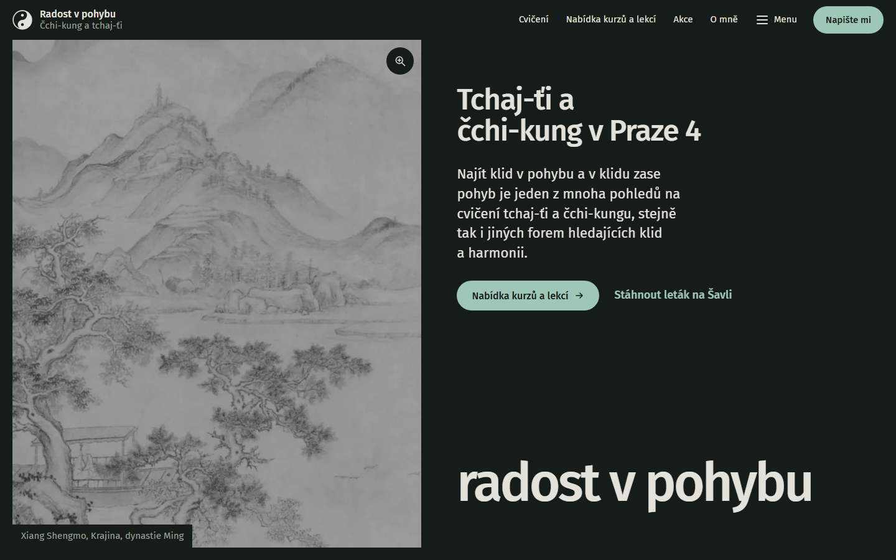
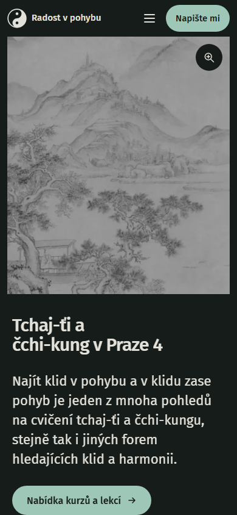

Radost v pohybu – tchaj-ťi a čchi-kung, Mgr. Daniel Tkadlčík, Praha 4
Audit produkčního webu ze dne 23. 11. 2026, po nasazení změn majitele (seminář 28.–29. 11., nový pondělní kurz, „13 slov tchaj-ťi“, zrušení Zlína).
80ze 100
Celkové SEO skóre: dobré
Technický základ, rychlost a strukturovaná data jsou nadprůměrné. Body ztrácí web na obsahu (zastaralé a protichůdné informace, málo důvěryhodnostních signálů) a na lokální viditelnosti (chybí profil firmy na Googlu, katalogy a recenze).
Jak audit vznikl. Deset specializovaných analýz (technika, obsah, strukturovaná data, sitemap, výkon, vizuál a mobil, AI vyhledávání, připravenost pro AI agenty, search experience, lokální SEO) nad všemi 12 stránkami produkce; klíčová zjištění ověřena ručně. Rychlost = laboratorní měření Lighthouse (bez dat z Chrome UX Reportu). Bez přístupu do Google Search Console, Analytics a k datům o zpětných odkazech – návštěvnost a pozice ve vyhledávání v auditu nejsou.
Shrnutí
Oblast
Váha
Skóre
Technické SEO
22 %
90
Kvalita obsahu (E-E-A-T)
23 %
64
On-page SEO (titulky, popisy, nadpisy, odkazy)
20 %
80
Strukturovaná data (schema.org)
10 %
86
Výkon (Core Web Vitals)
10 %
96
Připravenost na AI vyhledávání (GEO 66, AI agenti 80)
10 %
70
Obrázky
5 %
80
Celkem (vážený průměr)
80
Doplňkové oblasti mimo vážené skóre: sitemap 93, vizuál a mobil 88, search experience (SXO) 60, lokální SEO 58.
5 nejdůležitějších problémů
Starý leták na šavli na úvodní stránce a v Akcích ohlašuje jiný seminář ve stejném termínu 28.–29. 11. (Plující oblaka, 3 900 Kč), bez roku a s chybným e-mailem.
Starý web dan24.webnode.cz je stále veřejný a indexovatelný: duplicitní texty, Zlín, jiné ceny, žádný odkaz na nový web.
Chybí profil firmy na Googlu, zápis ve Firmy.cz / Mapy.cz a recenze – web se tak hůř dostane do mapových výsledků „tai chi Praha 4“.
Zastaralé informace o přihlášení na stránce semináře (záloha 1 500 Kč do 15. 11. 2025) vedle nového „platba na místě“.
Nový kurz pro začátečníky nemá cenu 90minutové lekce ani základní informace (co si vzít, zkušební lekce, délka kurzu).
5 rychlých výher
Leták na šavli schovat nebo označit jako proběhlý (jedna úprava v kódu).
Opravit meta popis Osmi kusů brokátu – slibuje „úterní kurz“, který v rozvrhu není.
Doplnit cenu nového pondělního kurzu (90 min).
Na stránce semináře označit blok „Přihlášení 2025“ jako proběhlý.
Nastavit cache hlavičky pro obrázky a statický security.txt (serverová úprava).
Už opraveno při auditu (čeká na nasazení): na stránce Zásady ochrany osobních údajů jsou doplněny všechny údaje, které chyběly (datum platnosti 1. 11. 2026, lhůty uchování, hosting Webglobe, s.r.o., Google Analytics 2 měsíce); cookie lišta zůstává při rolování na obrazovce.
Zjištění podle oblastí
Závažnost: Vysoká výrazně ovlivňuje výsledky ve vyhledávání nebo důvěru (do týdne) · Střední příležitost ke zlepšení (do měsíce) · Nízká drobnost. Kritické problémy (blokace indexace, penalizace) audit nenašel. Štítek „majitel“ = vyžaduje informace nebo rozhodnutí majitele webu, „web“ = úprava kódu / serveru.
Obsah a důvěryhodnost (64/100)
VysokáStarý leták na šavli koliduje s aktuálním seminářem · web + majitel
Tlačítko „Stáhnout leták na Šavli“ (úvodní stránka, Akce) vede na leták bez roku: „28. 11. celý den … 29. 11. pouze dopoledne“, místo Plující oblaka, cena 3 900 Kč, e-mail „tkadlcik@dentrum.cz“ a web „dan24.wbnoce..cz“. Skutečný seminář 28.–29. 11. 2026 je Hrátky pěti zvířat / Tchaj-ťi kung v ZŠ Jeremenkova za 2 500 Kč/den. Doporučení: leták z úvodní stránky odebrat; v Akcích ho označit jako proběhlý (s rokem), nebo nahradit opraveným letákem od majitele.
StředníZastaralé pokyny k přihlášení na stránce semináře · web
Sekce „Přihlášení na seminář 2025“ stále vyzývá „posílejte zálohu 1500 Kč do 15. 11. 2025 na účet …“ (text je jen ztlumený, bez štítku „Proběhlo“), nad ní platí „pokud možno platba na místě v hotovosti“. Doporučení: přidat štítek „Proběhlo“ nebo celý blok 2025 zkrátit na archivní odstavec.
StředníNový kurz pro začátečníky bez ceny a praktických informací · majitel
Ceník uvádí jen „350 Kč lekce 120 minut“; kurz od 7. 12. má lekce 90 minut. Chybí délka kurzu, zkušební lekce, co si vzít, velikost skupiny. Začátečník navíc na webu najde tři různé „začátečnické“ sestavy (8, 12 a 22 pohybů). Doporučení: od majitele cenu a 3–4 praktické věty; sjednotit, kterou sestavou se začíná.
StředníNesoulad: „pravidelný úterní kurz“ Osmi kusů brokátu · web
Meta popis /osm-kusu-brokatu/ (i llms.txt) slibuje „pravidelný úterní kurz v Praze 4“, ale úterní lekce je „Taichi-kung, procvičování dlouhá sestava“. Doporučení: popis přepsat podle skutečného rozvrhu.
StředníVěcné nepřesnosti v textech (k ověření majitelem) · majitel
„princip dýchání tuina“ (úvodní stránka, Kurzy) – tuina je masáž, jak uvádí i stránka O mně; Hrátky pěti zvířat vyjmenovávají čtyři zvířata a věta je nedokončená; na /osm-kusu-brokatu/ „Statickou formu vytvořil generál Yue Fei“ a obrácený výklad dao/yin; „Yang Chen Fu“ (nadpis) vs „Yang Cheng Fu“ (text). Doporučení: poslat majiteli seznam k potvrzení.
StředníMálo signálů důvěryhodnosti (E-E-A-T) · majitel
O mně neuvádí, od kdy Daniel učí, žádné osvědčení ani reference; žádné recenze ani ohlasy studentů; fotky jsou ilustrační, ne z lekcí; články na /clanky/ bez zdroje a překladatele. Doporučení: 2–3 ohlasy studentů, rok začátku výuky, foto z lekce nebo semináře (i s Vincentem Chu), zdroj článků.
StředníCvičení na horách: jen termíny z roku 2024 · majitel
Stránka je tenká, jediné termíny jsou z 2024 a jeden je nemožný („30. 7. neděle – 7. 7. 2024 neděle“); u proběhlých akcí je stále tlačítko přihlášení. Doporučení: nový termín, nebo stránku označit „termín bude upřesněn“.
NízkáŽádná stránka jasně neodpovídá „Co je tchaj-ťi / čchi-kung?“ · web + majitel
Článek „Co je čchi-kung a tchaj-ťi“ žádný z pojmů v první větě nedefinuje; chybí krátké odpovědi na otázky začátečníků. Pomohlo by vyhledávání i AI asistentům (viz AI vyhledávání).
On-page SEO (80/100)
Titulky a meta popisy jsou unikátní a mají správnou délku, na každé stránce je jeden H1 a jasná hierarchie nadpisů, ceny a rozvrh jsou v čitelném HTML.
NízkáSlabé vnitřní odkazy na průvodce Osm kusů brokátu a na články · web
/osm-kusu-brokatu/ má jen jeden kontextový odkaz z textu, články nemají žádný. Doporučení: odkázat z Cvičení, Kurzů a O mně.
Technické SEO (90/100)
Přesměrování http/www → https jedním krokem, správné 301/410/404 (vč. /cviceni-ve-zline/ → /kurzy-a-lekce/), robots.txt se sitemapou, self-canonical a lang="cs" na všech stránkách, noindex u zásad a vyhledávání, bezpečnostní hlavičky, blokovaný výpis uživatelů a xmlrpc, stránky z cache (~150 ms TTFB).
Nízká/.well-known/security.txt vrací 404 · web
Lokálně funguje (mu-plugin), na produkci adresu /.well-known/ obsluhuje přímo nginx Webglobe a k WordPressu se požadavek nedostane. Oprava: nahrát statický soubor do public_html/.well-known/security.txt.
Nízká/favicon.ico vrací prázdnou HTML odpověď · web
Zamýšlené přesměrování 301 na ikonu webu nefunguje (ani lokálně). Prohlížeče ikonu berou z <link rel="icon">, dopad je malý.
NízkáChybí Content-Security-Policy; HSTS jen 300 s · web
HSTS je krátké záměrně po spuštění – po týdnu bez problémů prodloužit na rok. CSP začít v režimu report-only.
NízkáVšechna lastmod v sitemapě = čas nasazení · web
Sitemap (93/100) jinak bezchybná: přesně 11 indexovatelných stránek, vše 200.
Strukturovaná data (86/100)
Každá stránka má jeden platný JSON-LD graf: Organization, SportsActivityLocation (Praha 4, souřadnice, mapa, cenové rozpětí), Person (Daniel, Vincent Chu), WebSite, WebPage/ContactPage/ProfilePage, drobečková navigace; na Akcích tři Eventy (28. a 29. 11. s cenou 2 500 Kč, 13. 12.), ve Videogalerii 5 VideoObjectů.
StředníNeděle 13. 12. bez ceny; všechny Eventy se stejným obecným obrázkem · majitel + web
Google doporučuje u akcí cenu (offers) a vlastní obrázek. Cenu nedělního cvičení dodá majitel; obrázek semináře – foto Vincenta Chu (focení na semináři).
NízkáDrobnosti ve schématu · web
Sobota a neděle semináře mají stejný název (doplnit téma dne); Eventy jsou jen na /akce/, ne na stránce semináře; Organization nemá sameAs (YouTube, později Google profil, Firmy.cz); Vincent Chu bez url; videa mají popis = název.
InfoAdresa organizace je sídlo z živnostenského rejstříku (Braník) · majitel
Je veřejná v rejstříku a uvedená i v zásadách; jen potvrdit, že ji majitel chce mít i ve strukturovaných datech.
Výkon (96/100)
Stránka
Lighthouse mobil
LCP mobil
LCP desktop
CLS
Přenos (mobil)
/
98–100
2,3 s
0,5 s
0
256 KiB
/kurzy-a-lekce/
98–100
2,2 s
0,5 s
0
243 KiB
/seminar-vincent-chu/
98–100
2,4 s
0,5 s
0
536 KiB
Laboratorní hodnoty (Lighthouse 12.8, mobil = pomalé 4G, 4× zpomalené CPU). INP v laboratoři měřit nelze; TBT 0–10 ms.
StředníObrázky se v prohlížeči neukládají do cache · web
Soubory v /wp-content/uploads/ nemají hlavičku Cache-Control ani Expires (ověřeno), opakovaná návštěva je stahuje znovu (76–370 KiB). Fonty jen 7 dní. Oprava: hlavičky pro statické soubory v kořenovém .htaccess (LiteSpeed ignoruje pravidla v podsložkách).
StředníLeták Guo Yang Tzu je 257 KB JPEG zobrazený na šířku 372 px · web
WebP v menší velikosti s odkazem na plnou verzi ušetří ~250 KiB na stránce semináře.
NízkáLCP na mobilu těsně pod hranicí 2,5 s · web
Většinu času tvoří zpoždění vykreslení – pravděpodobně úvodní animace obrázku (fade); první obrázek vykreslit bez animace.
Obrázky (80/100), vizuál a mobil (88/100)
Obrázky jsou ve WebP se srcset a alt texty, úvodní obrázek se přednačítá, žádné posuny rozvržení. Na mobilu nic nepřetéká, H1 a hlavní výzva jsou vidět, cookie lišta má rovnocenná tlačítka Přijmout/Odmítnout.
NízkáMalé dotykové plochy odkazů v textu · web
Odkazy v odstavcích (telefon a e-mail u semináře, odkazy v textu O mně, „Gin Soon…“ v patičce) mají ~22 px; tlačítko menu 38 × 44 px. Doporučení: na mobilu výška 44 px.
InfoNa mobilu /kurzy-a-lekce/ není v první obrazovce plné tlačítko · web
Jen textové odkazy; na úvodní stránce je tlačítko těsně u spodního okraje.

Úvodní stránka – desktop 1440 × 900

Mobil 390 × 844
AI vyhledávání – GEO (66/100) a AI agenti (80/100)
robots.txt povoluje všechny AI vyhledávače i asistenty (GPTBot, ClaudeBot, PerplexityBot, Google-Extended …), stránky jsou vykreslené na serveru, llms.txt je aktuální a ověřený proti obsahu, JSON-LD jasně popisuje osobu, místo a linii předání. Formulář je klasický HTML formulář s popisky.
StředníMálo krátkých citovatelných odpovědí · web + majitel
Žádný nadpis není otázka, chybí definice „tchaj-ťi je …“ / „čchi-kung je …“ v první větě. Doporučení: krátký blok „Časté otázky začátečníků“ (5–6 otázek) na Kurzech – bez schématu FAQPage (Google jeho výsledky zrušil).
Nízkállms.txt uvádí proběhlou neděli 15. 11. jako budoucí · web
Filtrovat proběhlé termíny i v llms.txt.
Search experience (60/100)
Typ stránky odpovídá výsledkům Googlu pro „tai chi / tchaj-ťi Praha 4“, „osm kusů brokátu“ a „Vincent Chu seminář“. Pro „kurz tai chi pro začátečníky Praha“ a „čchi-kung kurz Praha“ konkurence vychází s celou stránkou kurzu – zde je to jedna sekce na /kurzy-a-lekce/. Skóre person: začátečník 61, srovnávající zájemce z Prahy 4 62, pokročilý (seminář) 72, zájemce o cvičení 58.
StředníSamostatná stránka pro kurz pro začátečníky · web + majitel
Až budou známé cena a praktické informace, vlastní stránka „Kurz tchaj-ťi pro začátečníky Praha 4“ by lépe odpovídala hledání začátečníků než sekce v ceníku.
Lokální SEO (58/100)
Adresa a telefon jsou na webu, ve strukturovaných datech i v llms.txt jednotné (Jeremenkova 1003/66A, +420 773 287 113), místo má souřadnice a mapu, Zlín je odstraněný.
VysokáProfil firmy na Googlu (Google Business Profile) · majitel
Nebyl nalezen (ručně ověřit). Doporučení: založit profil jako „škola tai chi“ s adresou tělocvičny ZŠ Jeremenkova (nikdy ne sídlo v Braníku), hodiny = rozvrh lekcí, fotky z lekcí, odkaz na web; pak sbírat recenze od studentů.
VysokáŽádné recenze ani zápisy v katalozích · majitel
Firmy.cz (Mapy.cz), Facebook – založit se shodným názvem, adresou a telefonem; odkazy pak doplnit do schématu (sameAs).
StředníStarý web dan24.webnode.cz · majitel
Stále vrací 200, nabízí Zlín a jiné ceny – konkurenční a protichůdné údaje. Doporučení: na starý web dát jen odkaz na nový, pak ho vypnout (je to i v plánu nasazení).
Akční plán
Fáze
Úkol
Kdo
1. Hned tento týden
Nasadit doplněné zásady a cookie lištu, která zůstává na obrazovce
web (hotovo, čeká na nasazení)
Leták na šavli z úvodní stránky odebrat, v Akcích označit jako proběhlý
web
Blok „Přihlášení na seminář 2025“ označit „Proběhlo“; opravit popis Osmi kusů („úterní kurz“); proběhlé termíny z llms.txt
web
Cena nového pondělního kurzu (90 min) a nedělního cvičení
majitel
2. Do 2–3 týdnů
Profil firmy na Googlu + Firmy.cz se stejnou adresou tělocvičny a telefonem; odkazy do sameAs
majitel, pak web
Starý web dan24.webnode.cz: odkaz na nový web, pak vypnout
majitel
Cache hlavičky pro obrázky, statický security.txt, menší leták Guo Yang Tzu (WebP)
web
3. Do měsíce
Potvrdit věcné opravy v textech (tuina, Hrátky pěti zvířat, Yue Fei, Yang Cheng Fu)
majitel
Ohlasy studentů, rok začátku výuky, foto z lekce / s Vincentem Chu; termín Cvičení na horách
majitel
Blok „Časté otázky začátečníků“; případně samostatná stránka kurzu pro začátečníky
web + majitel
4. Průběžně
Search Console: odeslat sitemap, sledovat indexaci a dotazy; po připojení Google Analytics měřit návštěvnost; HSTS prodloužit na rok; po každé akci znovu sestavit web (štítky „Proběhlo“)
web + majitel
Jak poznáme, že to funguje
Search Console (Výkon): zobrazení a kliknutí na dotazy „tai chi Praha 4“, „tchaj-ťi Praha“, „čchi-kung kurz Praha“; rich výsledky akcí bez chyb (Vylepšení → Události).
Profil firmy na Googlu: zobrazení v Mapách, kliknutí na web a volání; počet recenzí.
Přihlášky: počet zpráv z formuláře s tématem kurzu / semináře.
Starý web: po vypnutí z výsledků Googlu zmizí do několika týdnů (site:dan24.webnode.cz).
Omezení auditu
Bez dat ze Search Console, Google Analytics, Chrome UX Reportu a o zpětných odkazech (přístupy nejsou nastavené) – návštěvnost, pozice a reálná rychlost u návštěvníků nejsou v auditu.
Existenci profilu na Googlu, Firmy.cz a Facebooku nebylo možné spolehlivě ověřit vyhledáváním – zkontrolovat ručně.
Během auditu ochrana serveru krátce zablokovala IP adresu auditu (velký počet požadavků); pro běžné návštěvníky web fungoval.
Podrobná zjištění jednotlivých analýz (anglicky): docs/seo/audit-2026-11-23/findings/*.md, snímky obrazovky: screenshots/.